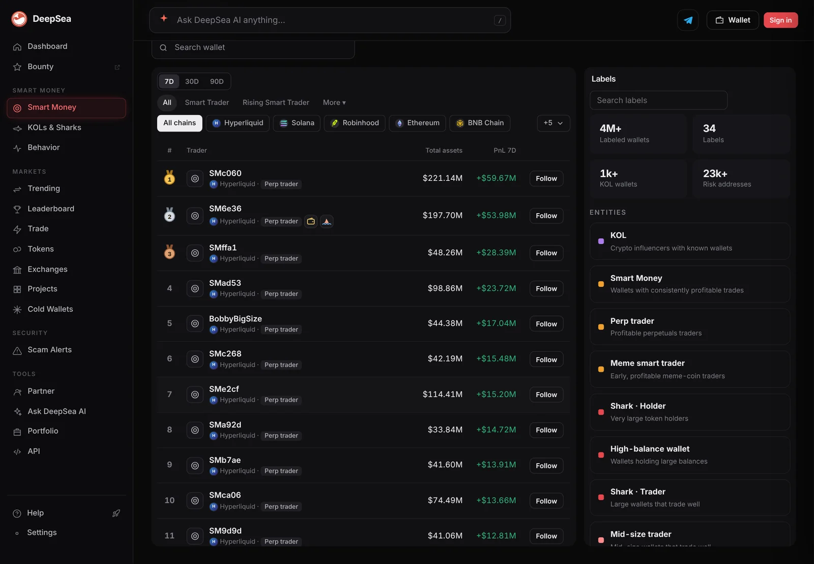
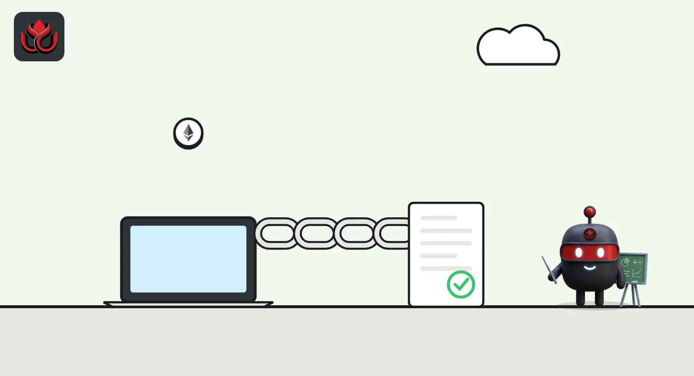

What 9 on-chain analytics tools are built for, from block explorers to compliance suites
Arkham, Nansen, Chainalysis, TRM Labs, Dune, Glassnode, DefiLlama, block explorers and DeepSea all read public blockchain data, but each is built for a different job. Here is what each one does, what is free and who uses it, from each tool's own site.
Key points
- The nine tools fall into rough groups: wallet labeling (Arkham, Nansen, DeepSea), investigations and compliance (Chainalysis, TRM Labs), query and metrics platforms (Dune, Glassnode, DefiLlama) and raw lookup (block explorers).
- Most offer a free tier. Chainalysis and TRM Labs sell mainly to companies and agencies through demos and sales teams.
- Every feature, price and figure below comes from the tool's own website, checked on November 6, 2026. Company figures are their own claims.
- Wallet labels are each company's attribution, not a confirmed identity. Readers can check any label against the raw transactions on a block explorer.
 What DeepSea's Smart Money page shows
What DeepSea's Smart Money page shows
As one example of the format, DeepSea's Smart Money page ranks wallets by realized profit over 7, 30 or 90 days and lets users filter by chain. On the morning of November 6, the 7-day list was led by Hyperliquid perpetual futures traders under short DeepSea labels; the first wallet, SMc060, showed a 7-day profit of +$59.67 million at about 6:36 a.m. ET. The labels are DeepSea's attributions, and the figures move during the day.

Data: DeepSea (desea.io), checked November 6, 2026, 6:36 a.m. ET.
How to read this guide
On-chain analytics tools take the public record of a blockchain (every transfer, swap and contract call) and turn it into labels on wallets, charts, alerts and traces of where money went. What differs is who the tool is built for and what it adds.
Each entry uses the same format: what the tool is built for, main features, free and paid options, who uses it, one thing a reader can look up, and a link. The order is the headline's, not a ranking. Prices are each company's own and can change.
Disclosure: DeepSea is a product of LC Insight's owner, and LC Insight cites DeepSea data in some articles.
Arkham
Built for: linking blockchain addresses to the real-world entities behind them, such as funds and exchanges.
Main features: Arkham's platform overview lists more than 150,000 entity pages (holdings, balance history, profit and loss, exchange use, top counterparties), more than 300 million labels by its own count, a Visualizer that maps links between addresses, token pages with top holders and exchange flows, alerts by size, entity, chain and token, custom dashboards and an API.
Free vs. paid: according to the Arkham homepage, free accounts get explorer pages, labels, the Visualizer and limited email and Telegram alerts. Case management, tracing, filtering and sorting, and custom labels sit in Arkham Enterprise, which has a 14-day trial; pricing is set per team.
Who uses it: Arkham's homepage names compliance and anti-money-laundering staff at exchanges and banks, investigators in government and policing, and research teams.
Look up: an exchange's entity page to see its holdings and recent flows.

Nansen
Built for: traders and investors who want to follow labeled wallets, including the ones Nansen calls Smart Money.
Main features: Nansen's own guide to its free tier describes Token God Mode (holder lists, flows, a profit leaderboard and exchange activity for a token), a Wallet Profiler, watchlists, alerts and a Token Screener with a smart money net flow filter. Nansen says it has labeled more than 500 million wallets.
Free vs. paid: the free account covers search and viewing with basic alerts; the Nansen Pro page says the free plan allows one active smart alert. Pro costs $69 a month, or $49 a month billed yearly, and adds unlimited alerts and labels plus weekly AI agent credits.
Who uses it: individual traders and investors; the free tier has no team features.
Look up: a token's top 100 holders, with labels, in Token God Mode.
Chainalysis
Built for: investigating crypto crime and running compliance checks for companies and governments.
Main features: its Reactor investigation tool traces funds across 27+ blockchains, more than 300 bridges and DEXs (decentralized exchanges), and widely used mixers, and links on-chain addresses to more than 134,000 real-world services, by the company's count. KYT (Know Your Transaction) monitors incoming and outgoing transfers on a platform and raises risk alerts within seconds. Other products include Address Screening and Wallet Scan.
Free vs. paid: the product pages list no prices; access is by demo request. A free on-chain sanctions oracle, announced on the Chainalysis blog on March 10, 2022, is now marked deprecated, with its last update on March 18, 2026.
Who uses it: Chainalysis cites more than 1,500 customer organizations. Its KYT page shows exchange logos, and its investigations products are aimed at government and law enforcement as well as companies.
Look up: the public research on the Chainalysis blog.
TRM Labs
Built for: tracing crypto linked to crime and screening wallets and transactions for risk.
Main features: TRM Forensics searches across 65+ blockchains, by TRM's count, with graph tracing, automatic cross-chain tracing, pattern detection for tricks such as peeling chains, attribution with confidence scores and an AI assistant called Co-Case Agent. Its documentation covers Wallet Screening, Transaction Monitoring and its Blockint APIs.
Free vs. paid: the Forensics page lists no prices or free tier. The docs for TRM's Sanctions API and Chainabuse API (Chainabuse is a scam-report site) are public with no login.
Who uses it: TRM's docs group customers into banking, crypto businesses, fintech and law enforcement, and case studies on its Forensics page feature work with Coinbase and US Homeland Security Investigations.
Look up: the public Sanctions API documentation on docs.trmlabs.com.
Dune
Built for: writing your own queries on blockchain data and sharing the results as dashboards.
Main features: Dune's data catalog covers 100+ blockchains in three layers: raw blocks and transactions, decoded contract events, and curated tables maintained by Dune's team. Users write SQL in the web app, use a Data API, or get the data inside their own Snowflake, BigQuery or Databricks setup through Datashare.
Free vs. paid: Dune's pricing FAQ says free access is view-only: anyone can browse public queries and dashboards, but running queries and using the API need a trial or a paid plan. A new account starts with a 14-day trial that includes 2,500 credits.
Who uses it: analysts who write SQL, and teams that use Dune data in their own warehouses or run dbt pipelines on Dune.
Look up: any public dashboard on a protocol you use, without signing up.
Glassnode
Built for: market metrics drawn from on-chain and trading data, mainly for investors and analysts.
Main features: Glassnode's data page lists on-chain fundamentals (activity, supply, profit and loss, capital flows), derivatives data such as funding rates and open interest, spot ETF net flows and balances: 1,700+ metrics on 1,500+ assets, by its count. Its Studio product adds dashboards, an API and an MCP server.
Free vs. paid: the Glassnode FAQ lists a free Standard plan with basic metrics at daily resolution, an Advanced plan with more metrics at up to hourly resolution and a light API, and a Professional plan with all metrics at up to 10-minute resolution and the full API.
Who uses it: Glassnode names hedge funds, asset managers and firms such as Coinbase Institutional, CME and Grayscale.
Look up: daily bitcoin ETF net flows in Studio.
DefiLlama
Built for: tracking how much money sits in DeFi protocols and chains, and what they earn.
Main features: its methodology docs list total value locked (TVL), stablecoin supply, yields, fees and revenue, DEX and perps volume, token unlock schedules and more. The about page counts 8,147 protocols on 536 chains and says the data is fully open source; the docs point to a public adapters repository on GitHub with the code that computes each protocol's TVL.
Free vs. paid: the pricing page lists a free Open tier with TVL, fees and prices, Pro at $49 a month (AI tool LlamaAI, Pro dashboards, CSV downloads) and an API plan at $300 a month.
Who uses it: DeFi users and analysts; DefiLlama says contributors from hundreds of protocols help maintain its data.
Look up: a protocol's TVL, fees and revenue on its DefiLlama page.
Block explorers
Built for: looking up the raw record of one chain. Etherscan, which covers Ethereum, calls a block explorer "a search engine for a blockchain." Other chains have their own, such as Solscan, BscScan, Tronscan and mempool.space.
Main features: on Etherscan, a user can open any transaction by its hash (status, sender, recipient, value), any address (balances, tokens, NFTs), any block and any smart contract, including verified source code.
Free vs. paid: Etherscan describes the explorer as free and public. Its API pricing has a free tier of 3 calls a second and up to 100,000 a day on selected chains, and paid plans from $49 to $899 a month.
Who uses it: anyone who sends crypto and wants to check a transfer, plus developers building apps on its API.
Look up: paste the hash of your last transfer to see whether it confirmed.
DeepSea
Built for: following influencer (KOL), shark and smart money wallets, and flagging scam tokens and risky wallets.
Main features: DeepSea's feature list covers smart money wallets ranked by profit, KOL and shark tracking, exchange inflows and outflows, a hacks tracker that follows stolen funds hop by hop to exchanges, token risk checks, an AI chat assistant and swaps on seven chains from the user's own wallet. Its docs describe a beta check that matches a KOL's public posts about a token with that KOL's own wallet activity, and alerts by webhook, Telegram or email.
Free vs. paid: the docs list a free plan with 5 AI questions a day (10 signed in), Pro at $59 a month ($49 billed yearly) and an API plan at $129 a month ($99 billed yearly).
Who uses it: individual investors, plus bots, funds and analysts through its Data API.
Look up: the 7-day Smart Money leaderboard at desea.io/#smart.
Using more than one tool
The tools overlap, and their labels can disagree, because each company builds its own attributions. Label counts, chain counts and customer numbers are the companies' own, measured in different ways, so they do not compare directly.
A practical habit: when a tool shows a big move, open the transaction on the chain's block explorer and confirm the amount, time and addresses yourself.
LC Insight analysis
This section is our reading of the facts above, not a statement of fact.
- We think the useful question is not which tool to pick but what job you need done: tracing stolen funds, following labeled traders, building your own query or checking a single transfer each points to a different kind of tool.
- Most of these companies offer something free, but the most detailed features (case management, full APIs, high-resolution data) stay behind paid plans or sales calls at almost every company on this list.
- Because labels are proprietary, the block explorer remains the common check. A figure that cannot be traced back to a transaction is a claim, not a fact.
What's next
- Price and plan changes at each company, which list current terms on their own sites
- More AI assistants and MCP servers built on top of on-chain data
- Whether free sanctions screening returns at Chainalysis after its oracle was deprecated
Frequently asked questions
Which of these tools are free to use?
Seven of the nine have free tiers or free viewing, according to their own sites, but the depth differs. Block explorers and Dune dashboards can be browsed without paying; Arkham, Nansen, Glassnode, DefiLlama and DeepSea have free tiers with limits. Chainalysis and TRM Labs sell mainly through demos and sales teams, though both publish free research or public API docs.
Are wallet labels proof of who owns a wallet?
No. Labels are each company's attribution based on its own methods. They can be wrong or out of date, so treat them as a lead and check the underlying transactions.
What is the difference between a block explorer and an analytics tool?
A block explorer shows the raw record of one chain: transactions, addresses, blocks and contracts. Analytics tools add labels, charts, alerts and tracing across many chains on top of that same data.
Disclaimer. This article is based on public information and the sources listed below as of the update time shown. It is for information only and is not investment, legal or tax advice. Figures may change as companies and authorities publish new data.
Sources
- Arkham, The intelligence platform (checked November 6, 2026)
- Arkham, homepage and FAQ (checked November 6, 2026)
- Nansen, Free onchain data guide (checked November 6, 2026)
- Nansen Academy, About Nansen Pro (checked November 6, 2026)
- Chainalysis, Reactor (checked November 6, 2026)
- Chainalysis, KYT (checked November 6, 2026)
- Chainalysis, Sanctions oracle docs (deprecated)
- TRM Labs, TRM Forensics (checked November 6, 2026)
- TRM Labs, Documentation (checked November 6, 2026)
- Dune, Data catalog overview
- Dune, Pricing FAQ (checked November 6, 2026)
- Glassnode, Data products (checked November 6, 2026)
- Glassnode, FAQ
- DefiLlama, About (checked November 6, 2026)
- DefiLlama, Docs and pricing (checked November 6, 2026)
- Etherscan, What is a block explorer?
- Etherscan, API pricing (checked November 6, 2026)
- DeepSea, Full feature description (checked November 6, 2026)
- DeepSea, Documentation and pricing (checked November 6, 2026)